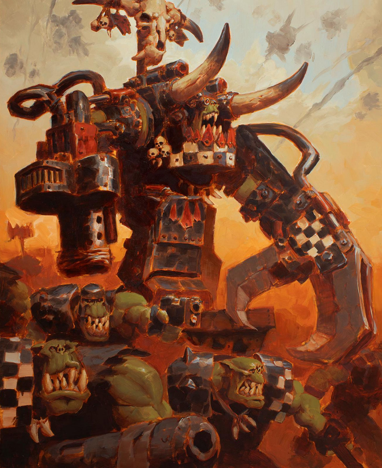

Dossier xenos 704.M41
Les Orks ne forment pas une société stable. Ils se regroupent par bandes, tribus et clans, selon des instincts, des couleurs, des traditions brutales et des préférences guerrières.
Ces clans ne sont pas des nations. Ce sont des tendances violentes, des cultures de guerre, des façons différentes de hurler, frapper, piller et mourir.

ORIGINES ET NATURE
Les Goffs sont les plus directs. Brutaux, massifs, obsédés par le combat rapproché, ils considèrent souvent la subtilité comme une faiblesse inutile. Là où ils passent, la ligne ennemie cède sous le poids pur de la violence.
Les Evil Sunz vivent pour la vitesse. Véhicules, motos, moteurs hurlants, explosions et poussière. Ils frappent vite, souvent trop vite pour comprendre eux-mêmes où ils vont, mais assez vite pour écraser ce qui se trouve devant eux.
Les Bad Moons sont les plus riches, car leurs dents repoussent plus vite. Cette richesse leur permet d’accumuler les armes les plus grosses, les armures les plus voyantes et les machines les plus absurdes. Leur arrogance est proportionnelle à leur arsenal.
Les Deathskulls sont des pillards compulsifs. Ils récupèrent tout, démontent tout, volent tout. Un champ de bataille traversé par eux devient rapidement un dépôt de ferraille vide.
STRUCTURE ET DOCTRINE
Les Blood Axes sont les plus inquiétants. Ils imitent parfois les doctrines militaires humaines, utilisent la ruse, les embuscades, les uniformes et même des formes grossières de stratégie. Chez un Ork, cette capacité à planifier mérite une attention particulière.
Les Snakebites rejettent une partie des excès mécaniques pour se tourner vers des traditions plus primitives. Bêtes de guerre, armes simples, endurance sauvage. Leur rusticité ne les rend pas moins dangereux.
Ces clans peuvent s’affronter entre eux aussi facilement qu’ils s’unissent. La rivalité est constante. Les insultes deviennent batailles. Les batailles deviennent massacres.
Pourtant, lorsqu’une Waaagh se forme, ces différences s’effacent partiellement. Le besoin de guerre devient plus fort que les querelles internes. Les clans se rassemblent derrière le chef le plus brutal.
MENACE ACTUELLE
Il faut comprendre ceci. Les clans orks ne divisent pas réellement la menace. Ils la multiplient.
Chaque clan apporte une forme différente de danger. Brutalité, vitesse, pillage, richesse armée, ruse ou sauvagerie.
Et lorsqu’ils marchent ensemble, l’Imperium ne fait plus face à une horde. Il fait face à une catastrophe organisée par instinct.
Fin de l’extrait. Toute identification de clan doit être transmise aux commandements locaux. La réponse tactique dépend du type de menace ork observée.